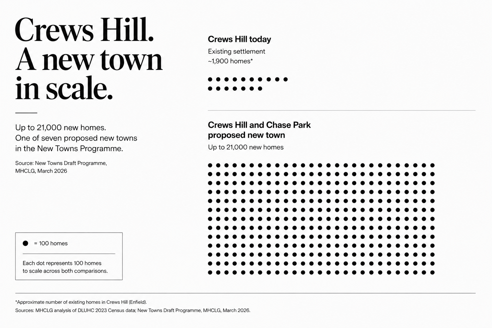
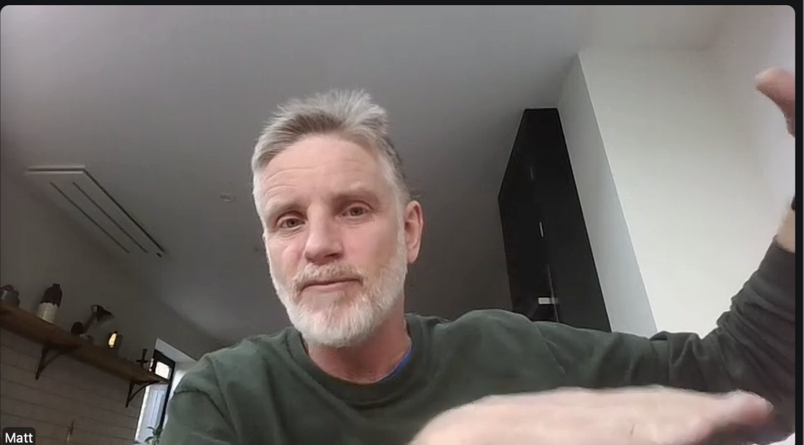

The government has given the "green light" to new towns — such as the 21,000-home Crews Hill proposal — with a series of sweeping reforms. The Ministry of Housing, Communities and Local Government has proposed speeding up housing projects located within 15 minutes of a station and to give the Housing Secretary, Steve Reed, the power to decide on developments of 150 homes or more.
Crews Hill, in northern Enfield, was named as a potential location for a 21,000-home development in September's New Towns Taskforce report. The Taskforce is described as "an independent expert advisory panel established in September 2024 to support the government to deliver the next generation of new towns." It is the latest move to cut red tape and centralise approval for large-scale projects as the UK grapples with a severe housing shortage.
No timeline has been given for the development, which has a target for 50 per cent of homes to be affordable. The area is currently home to around 500 people, based on 2011 census data and Enfield Council.

Each dot represents 100 homes. Sources: MHCLG analysis of DLUHC 2023 Census data; New Towns Draft Programme, MHCLG, March 2026.
In an announcement alongside Chancellor of the Exchequer, Rachel Reeves, Housing Secretary Reed said: "We're making it easier to build well-connected and high-quality homes. This is about action: spades in the ground, breathing new life into communities, and families finally getting the homes they need."
"I suppose it brings them back to life by basically getting rid of the community."
— Matt Burns, co-founder, Better Homes Enfield

Matt Burns, sustainability consultant and co-founder of Better Homes Enfield.
But Matt Burns, a sustainability consultant and co-founder of Better Homes Enfield, said it could have the opposite effect. "Generally this kind of regeneration in London has seen the breakdown of community. Not bringing them back to life," he said. Local politicians failed to communicate the project properly, he claims.
"You're talking about a huge, huge amount of infrastructure building. Changes to roads, changes to railways," Burns added. "It sounds like a 50-year development to me."
Data
Enfield builds less than a third of the homes it needs each year
Source: Enfield Housing and Growth Strategy 2025–2030, Enfield Council
⁑
Andrew Lack and John West, spokespeople for conservation charity The Enfield Society, said the government's announcement had alarmed local residents who oppose the Crews Hill proposal. "It's looking more likely that this scheme will be selected next Spring, necessitating a much more aggressive stance from local residents who oppose it," Lack said.
This week's announcement also stated green belt land would fall under the new rules. The Crews Hill site has already been described as "poor quality" by the New Towns report. The green belt is a protected ring of land around a city designed to halt urban sprawl.
"The characterisation that the green belt is 'low grade' and the area 'well-connected' does not stand up to scrutiny," Lack said. The Society has presented evidence to Enfield Council showing these claims to be "largely untrue" for the Crews Hill area.
Lack added: "It may be true that some of the land to the east of the railway line to Crews Hill station is not good quality green belt and the Society might be prepared to see some development there, but not west of the railway and not at Vicarage Farm."
Vicarage Farm — called Chase Park by developer-owners Comer Homes — is a large swathe of green belt land between Crews Hill and Oakwood: 3,700 homes are proposed for construction there. Local conservationists are particularly concerned about the site because of its status as a remnant of a medieval hunting lodge.
"This is not solving the housing crisis for the 5,000 children in Enfield in temporary accommodation today."
— Matt Burns
In the announcement, Reeves said: "This is another demonstration that our Plan for Change is getting spades in the ground faster, connecting people with jobs and opportunities closer to where they live, and boosting towns and cities across the country."
The government's Plan for Change includes the objective to help the 150,000 children nationwide in temporary accommodation into social housing. According to Trust For London, around 17 households per 1,000 in Enfield include children in temporary accommodation — the eighth highest in London.
Burns is unconvinced the scheme addresses the immediate crisis: "It's not solving the crisis for the people who can't afford to pay their rent today."
Labour MP for Enfield North Feryal Clark and Labour council leader Ergin Erbil are both in favour of the Crews Hill proposal. Neither responded to a request for comment. Clark said the proposal would be a "big change" for the area, but believed it would address the local need for social housing. Erbil said: "We welcome the government's decision to include Crews Hill and Chase Park as a potential new town. This is a strong vote of confidence in Enfield."